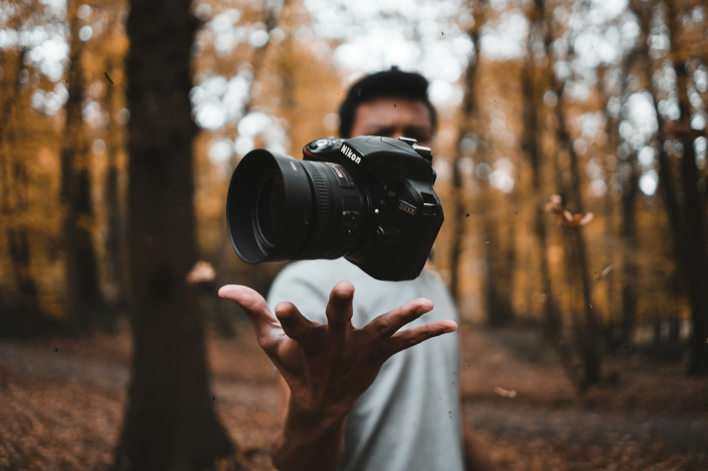

La previa, los abrazos, la pista. Cobertura de casamientos, fiestas y encuentros, con atención a lo que pasa entre los grandes momentos.
Consultar por mi eventoUNA HISTORIA. OTRA FORMA DE MIRAR.
La miradalo cambiatodo.
FOTOGRAFÍA / VIDEO / DRONES
Para el día que no se repite.
Para el proyecto que recién empieza.
Imágenes con intención, de principio a fin.
EL MOMENTO ES TUYO.
La forma de
contarlo, también.

Nos metemos en la historia. Buscamos el gesto, la luz, lo que suele pasar desapercibido. Y lo convertimos en algo que quieras volver a ver.
01 / LO QUE PODEMOS HACER JUNTOS
Distintas historias.
Una mirada propia.
Elegí un servicio. Mirá de qué se trata.
Lo demás, lo conversamos.
Que jueguen, que corran, que sean ellos. Fotografía y video de cumpleaños para guardar su mundo tal como es hoy.
Consultar por un cumpleañosUna vista que cambia la escala de tu historia. Fotografía y video aéreo para proyectos, locaciones y eventos, según viabilidad del lugar y del clima.
Consultar por tomas aéreasLa amplitud, las texturas, la luz que entra. Imágenes para presentar propiedades, documentar avances y darle presencia a tu proyecto.
Consultar por un espacio02 / ARCHIVO VISUAL
Lo que queda
después del clic.
Personas. Lugares. Instantes.
Una selección visual de referencia.
EL ARCHIVO SIGUE. TU HISTORIA TAMBIÉN PUEDE ESTAR ACÁ.Empecemos a imaginarla

DE ESTE LADO DEL LENTE / LUZ03 / DETRÁS DE LA MIRADA
No buscamos
la foto perfecta.
Buscamos la tuya.
Una buena imagen empieza mucho antes de tocar el disparador. Empieza escuchando, entendiendo qué querés contar y encontrando la manera de hacerlo.
Fotografía, video y tomas aéreas con una misma intención: que te reconozcas en el resultado.
Hablemos de tu ideaSIN COMPLICARLO.
De la charla
a la entrega.
Nos contás.
La idea, la fecha y el lugar. Definimos juntos el alcance y el presupuesto.
Lo producimos.
Coordinamos la cobertura y cuidamos los detalles en cada toma.
Lo recibís.
Fotos y videos editados. Formatos y plazos acordados desde el inicio.
04 / PRÓXIMA HISTORIA
Bueno.
Hablemos
de la tuya.
Una fecha. Un lugar. Una idea a medio armar. Contanos dónde empieza y vemos cómo contarla.
ANTES DE EMPEZAR
Dos o tres cosas
que está bueno saber.
¿Puedo contratar foto y video juntos?
Sí. El equipo y los entregables se definen según tu evento o proyecto.
¿Qué necesitan para presupuestar?
Servicio, fecha, ubicación y una idea del alcance. Los tiempos y formatos de entrega quedan acordados en la propuesta.
¿Se puede volar el dron en cualquier lugar?
La viabilidad se evalúa según la ubicación, el clima y las autorizaciones que correspondan.